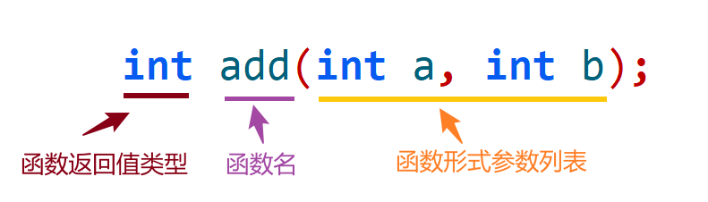

<!DOCTYPE lake>
<h1 data-lake-id="QSPqc" id="QSPqc"><span data-lake-id="u0ac2af83" id="u0ac2af83">1&gt; 代码"头重脚轻"</span></h1><span class="yuque-card-unsupported">[codeblock]</span><p data-lake-id="u170eb14e" id="u170eb14e"><span data-lake-id="u8843b752" id="u8843b752">代码问题：</span></p><p data-lake-id="u00ae80be" id="u00ae80be"><span data-lake-id="u482ba66a" id="u482ba66a">"头重脚轻"的代码结构（</span><span data-lake-id="u54ad060b" id="u54ad060b" style="color: #117CEE">函数实现在前</span><span data-lake-id="u7d13ee25" id="u7d13ee25">）</span></p><p data-lake-id="u4708c858" id="u4708c858"><span data-lake-id="u44c5c859" id="u44c5c859">就像去餐厅消费时（</span><code data-lake-id="uc9d4d75c" id="uc9d4d75c"><span data-lake-id="ufbb6e282" id="ufbb6e282" style="color: #117CEE">main()</span></code><span data-lake-id="u58fba7ec" id="u58fba7ec" style="color: #117CEE">调用其他函数</span><span data-lake-id="uf1c4e555" id="uf1c4e555">），服务员要求：</span></p><p data-lake-id="u4323889e" id="u4323889e"><span data-lake-id="u1cccc93b" id="u1cccc93b">1️⃣</span><span data-lake-id="u130dd0ee" id="u130dd0ee"> 先到后厨检查所有食材（</span><span data-lake-id="u036ec170" id="u036ec170" style="color: #117CEE">必须查看每个函数的参数类型</span><span data-lake-id="uf12baa83" id="uf12baa83">）</span></p><p data-lake-id="ub24c14d7" id="ub24c14d7"><span data-lake-id="ub95529d0" id="ub95529d0">2️⃣</span><span data-lake-id="u827efbac" id="u827efbac"> 围观厨师烹饪过程   （</span><span data-lake-id="ub223b21f" id="ub223b21f" style="color: #117CEE">被迫看到每个函数的实现代码</span><span data-lake-id="u19e49070" id="u19e49070">）</span></p><p data-lake-id="u17c1405e" id="u17c1405e"><span data-lake-id="ue625edf1" id="ue625edf1">——然后才能点餐！</span><span data-lake-id="u8bcb0020" id="u8bcb0020">😱</span></p><p data-lake-id="u8a32fa61" id="u8a32fa61"><span data-lake-id="u459f50a0" id="u459f50a0"> </span></p><p data-lake-id="ub471dd1a" id="ub471dd1a"><code data-lake-id="uee805200" id="uee805200"><span data-lake-id="u5afd08d9" id="u5afd08d9">main()</span></code><span data-lake-id="u7df030c0" id="u7df030c0">是VIP客户，他只关心"吃什么"，不操心"怎么做"！</span></p><p data-lake-id="u70cbe01d" id="u70cbe01d"><span data-lake-id="u43b77579" id="u43b77579">✨</span><span data-lake-id="uf7936491" id="uf7936491"> 看菜单（函数声明Declaration）→ 点菜（函数调用）→ 后厨处理（函数定义Definition(实现））</span></p><hr/><h1 data-lake-id="E7nvO" id="E7nvO"><span data-lake-id="ua8d0bd75" id="ua8d0bd75">2&gt; 函数声明（Declaration）</span></h1><span class="yuque-card-unsupported">[codeblock]</span><p data-lake-id="udda04157" id="udda04157"><br/></p><p data-lake-id="u39d2456c" id="u39d2456c"><br/></p><span class="yuque-card-unsupported">[codeblock]</span><p data-lake-id="u44085f1f" id="u44085f1f"></p><p data-lake-id="uf85905b1" id="uf85905b1"><strong><span class="lake-fontsize-14" data-lake-id="uefea3264" id="uefea3264">函数声明作用：给main函数提供"菜单"</span></strong></p><p data-lake-id="u6181dc05" id="u6181dc05"><span class="lake-fontsize-12" data-lake-id="uba8b4015" id="uba8b4015">告诉编译器，已经实现了1个函数，叫什么名，接收什么类型的几个参数，返回1个什么类型的值；</span></p><p data-lake-id="uf683a84e" id="uf683a84e"><span data-lake-id="u46498950" id="u46498950">⚡</span><span class="lake-fontsize-12" data-lake-id="ud2d5e25b" id="ud2d5e25b">注意：</span><span class="lake-fontsize-12" data-lake-id="uafe50544" id="uafe50544" style="color: #DF2A3F">先声明后使用</span><span class="lake-fontsize-12" data-lake-id="u8b848c61" id="u8b848c61">；</span></p><hr/><h1 data-lake-id="YTf1z" id="YTf1z"><span data-lake-id="ub80a79e6" id="ub80a79e6">🐻</span><span data-lake-id="u2c351b22" id="u2c351b22">实践练习：</span></h1><p data-lake-id="ub19255c9" id="ub19255c9"><span data-lake-id="ud957e9dc" id="ud957e9dc"> 完善</span><span class="lake-fontsize-12" data-lake-id="ub40be7fe" id="ub40be7fe">简易计算器，实现浮点数计算功能</span></p><span class="yuque-card-unsupported">[codeblock]</span>